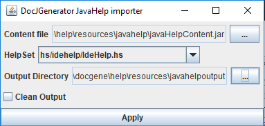

Importing JavaHelp content
It is possible to convert a JavaHelp content (stored in a jar file) to the docJGenerator Help content format to use it in the Help system.
A zip file named
Usage
ThejavaHelpImporter.jar tool allows to convert the JavaHelp content to the docJGenerator Help content: - The content file is the Jar file containing the JavaHelp content
- The HelpSet is the HelpSet entry containing the javaHelp master HelpSet[1]
Note that if there is only one HelpSet in the Jar file, this helpSet will be selected automatically
- The Output Directory is the directory where to generate the docJGenerator Help content
|  |
|
|
A zip file named
JavaHelp.zip will be automatically generated alongside the Output Directory.
Features
- The generator will take care of multiple mapIDs files
- The generator will take care of multiple toc files
- The index will be created automatically with the content of the mapIDs files and toc files
Notes
- ^ Note that if there is only one HelpSet in the Jar file, this helpSet will be selected automatically
See Also
- Help system: This article explains how to use the JavaHelp-like feature of the tool
- Comparison with JavaHelp: This article compares the help feature of docJGenerator with the JavaHelp system
×

Categories: javahelp